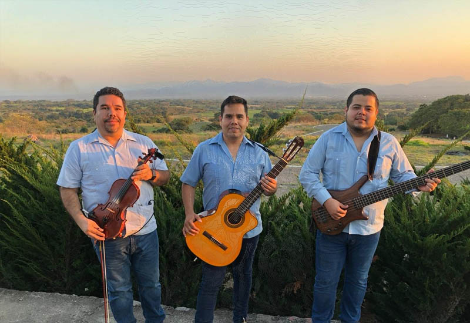
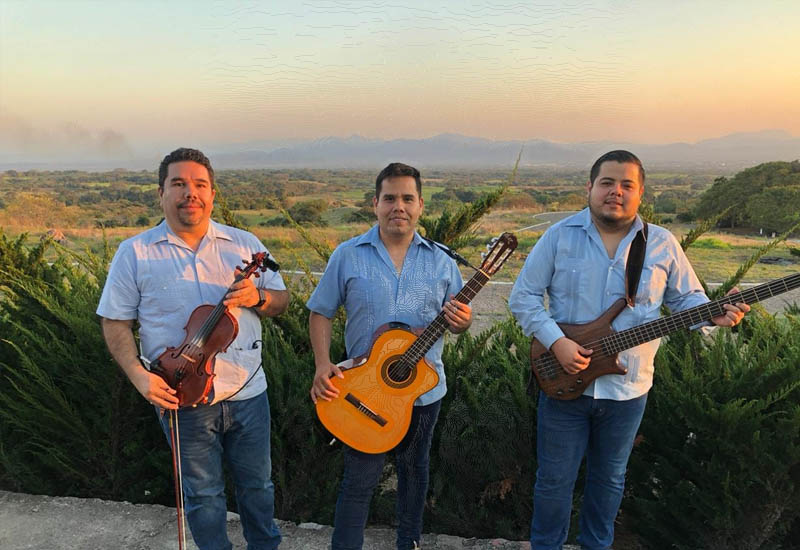

Sobre nosotros

Estamos listos para pintar de colores musicales tus momentos inolvidables. Eventos pequeños o grandes no deben pasar desapercibidos. Festejemos con responsabilidad con Los Arrieros.
¿Qué tipo de música te gusta más?. Tratamos de interpretar lo que quieras escuchar en tu reunión o evento. Lo clásico en boleros, rancheras, baladas, cumbias, norteñas... #TríoLosArrieros #Colima

Estamos listos para pintar de colores musicales tus momentos inolvidables. Eventos pequeños o grandes no deben pasar desapercibidos. Festejemos con responsabilidad con Los Arrieros. ¿Qué tipo de música te gusta más?. Tratamos de interpretar lo que quieras escuchar en tu reunión o evento. Lo clásico en boleros, rancheras, baladas, cumbias, norteñas... #TríoLosArrieros #Colima